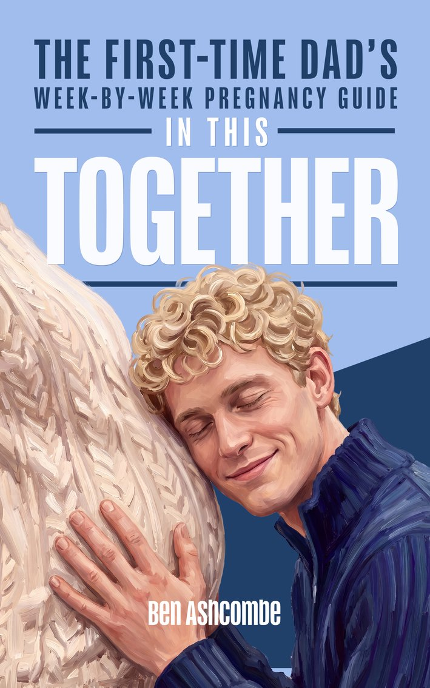
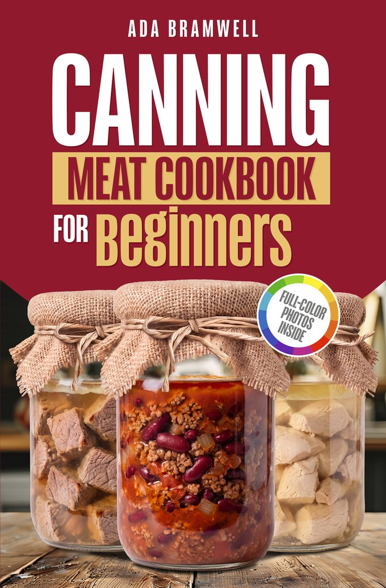

The First 52 Weeks
Retirement for Women: The First 52 Weeks
by Claire Penrose
A fun, week-by-week guide to rediscovering yourself, making new friends, and loving your new life.
Atlantic Lighthouse Press
The first year of retirement. The first year as a dad. Your first batch of home-canned meat. Short chapters, one small step at a time, and a few laughs along the way.
See the booksEvery book is built the same way: short chapters, one clear thing to do, no lectures. Most of them make a great gift, too.
by Claire Penrose
A fun, week-by-week guide to rediscovering yourself, making new friends, and loving your new life.

by Tom Penrose
A funny, no-lecture guide to enjoying the free time, finding your crew, and figuring out what comes next.

by Ben Ashcombe
The first-time dad's week-by-week pregnancy guide: supporting her, calming your nerves, and getting ready for baby, from the positive test to the first weeks home.

by Ada Bramwell
Safe, step-by-step pressure canning for beef, chicken, pork and wild game, with full-canner batches and 60+ jar-to-table meals in about 20 minutes.
Atlantic Lighthouse Press is a small independent publisher. We make books for the moments when life changes and nobody hands you a map: the day after the retirement party, the drive home from the hospital with a newborn in the back seat.
Our rule is simple: if a chapter doesn't help you do something this week, it doesn't go in the book. Read a little, try one thing, come back next week.
Already have one of our books? Look for the free gift on the last page.